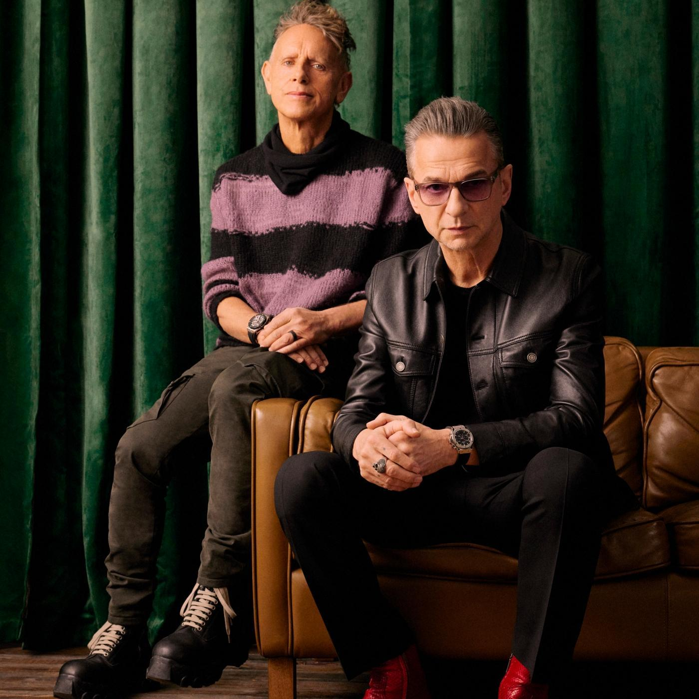
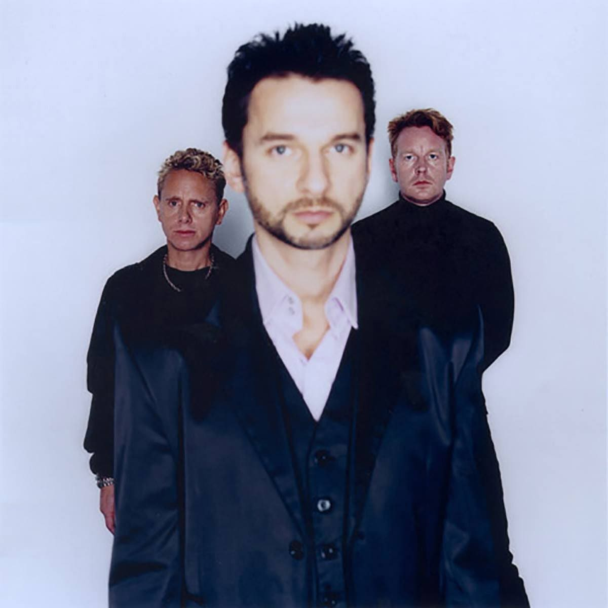
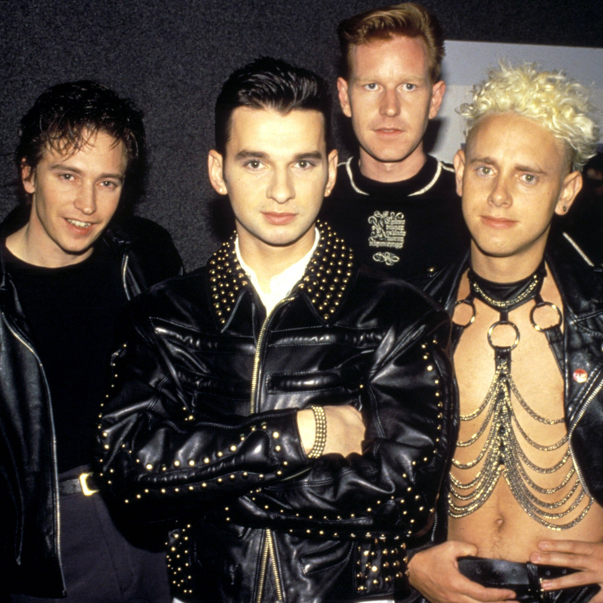
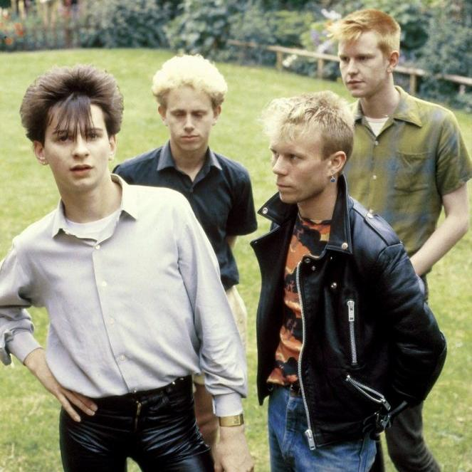

Depeche Mode é uma banda britanica formada em 1981.Seus generos são New wave,Shynthpop,Indie,Rock alternativo e Eletronica.
Martin Lee Gore ou Martin Gore é tecladista e um dos membros fundadores do Depeche Mode, e está na banda até atualmente. Martin é o principal compositor e letrista da banda, e também é a voz principal nas músicas Somebody, A Question of Lust, The Things You Said, I Want You Now, entre outras.
David Gahan ou Dave Gahan é o vocalista da banda de 1981 até atualmente. Vince Clarke, após ver Dave cantar a música Heroes de David Bowie, o chamou para sua banda Composition Of Sound, Dave aceitou, pedindo apenas para que Vince trocasse o nome da banda para Depeche Mode, que era o nome de uma revista que ele costumava ler durante a faculdade.
Andrew Flecher ou Andy Flech era tecladista e um dos membros fundadores do Depeche Mode, esteve na banda até seu falecimento em 2021. Seu ultimo trabalho na banda foi albúm Spirit.
Alan Charles Wilder ou Alan Wilder era tecladista do Depeche Mode e esteve na banda de 1982 até 1990, após sair começou a trabalhar em carreira solo. Seu ultimo trabalho na banda foi o albúm Violator.
Vincent John Martin ou Vince Clarke era tecladista e um dos membros fundadores do Depeche Mode, esteve na banda até 1982, após sair, participou de bandas como Yazoo, The Assembly e Erasure. Seu ultimo trabalho na banda foi o albúm Sepak & Spell.
Sepak & Spell (1981)
A Broken Frame (1982)
Construction Time Again (1983)
Some Great Reward (1984)
Black Celebration (1986)
Music for the Masses (1987)
101 (1989)
Violator (1990)
Songs Of Faith And Devotion Live (1993)
Songs Of Faith And Devotion (1993)
Ultra (1997)
Exciter (2001)
Playing The Angel (2005)
Touring The Angel: Live in Milan (2006)
Sounds Of The Universe (2009)
Tour Of The Universe: Barcelona 20/21:11:09 (2010)
Dlta Machine (2013)
Live in Berlin Soundtrack (2014)
Spirit (2017)
LiVE SPiRiTS SOUNDTRACK (2020)
Momento Mori (2023)
Dreaming Of Me (Single Version)
New Life
Just Can't Get Enough
See You
The Meaning Of Love
Leave In Silence (Single Version)
Get The Balance Right
Everything Counts
Love In Itself (Single Version)
People Are People
Blasphemous Rumours (Single Version)
Somebody
Shake The Disease
It's Called A Heart
Photgraphic (Some Bizzare Version)
Just Can't Get Enough (Schizo Mix)
Stripped
A Question Of Lust (Single Version)
A Question
See You
The Meaning Of Love
Leave In Silence (Single Version)
Get The Balance Right
Everything Counts
Love In Itself (Single Version)
People Are People
Blasphemous Rumours (Single Version)
Somebody
Shake The Disease
It's Called A Heart
Photgraphic (Some Bizzare Version)
Just Can't Get Enough (Schizo Mix)